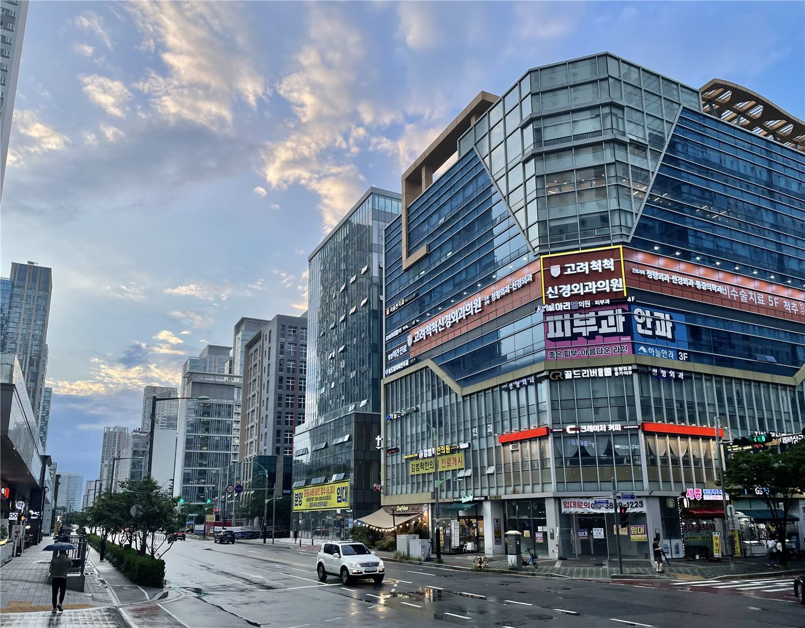

인천화교협회, 인천기독병원과 협약… 화교 주민 진료 편의 확대
인천화교협회가 인천기독병원과 협약을 체결했다고 공지했다. 지역 화교 주민의 진료 접근성과 언어 안내를 개선하기 위한 조치로 설명됐다.
방문연 기자 · 2026.08.30
橋화인소식

인천화교협회가 인천기독병원과 협약을 체결했다고 회원들에게 공지했다. 지역 화교 주민의 의료 이용 편의를 높이기 위한 협력이다.
광고 문의 · 300×250화교 사회에서 의료 접근성 문제는 언어와 절차 두 층위에서 나타난다. 증상을 정확히 전달하기 어려운 경우와, 보험 적용 범위나 서류 절차를 파악하기 어려운 경우가 겹친다.
병원과 협회 사이의 협약은 이런 지점을 완화하는 실무적 수단이다. 안내 창구를 지정하거나, 협회를 통한 사전 연락 절차를 두거나, 건강검진 항목을 단체로 조율하는 방식이 일반적이다.
인천은 한국 화교 사회의 오랜 중심지 가운데 하나로, 고령 회원의 비중이 높은 편이다. 정기 검진과 만성질환 관리에 관한 안내 수요가 꾸준히 있어 왔다.
인천화교협회는 앞서 60세 이상 외국인 대상 대상포진 무료 예방접종 안내를 비롯해 보건 관련 공지를 지속적으로 게시해 왔다.
협회는 협약의 구체적인 이용 절차에 대해서는 협회 사무실 안내를 참고해 달라고 밝혔다.
출처·참고 (사실 확인용 — 본문은 직접 재작성)
· 仁川華僑協會 공지(2026)
· 仁川華僑協會 공지(2026)